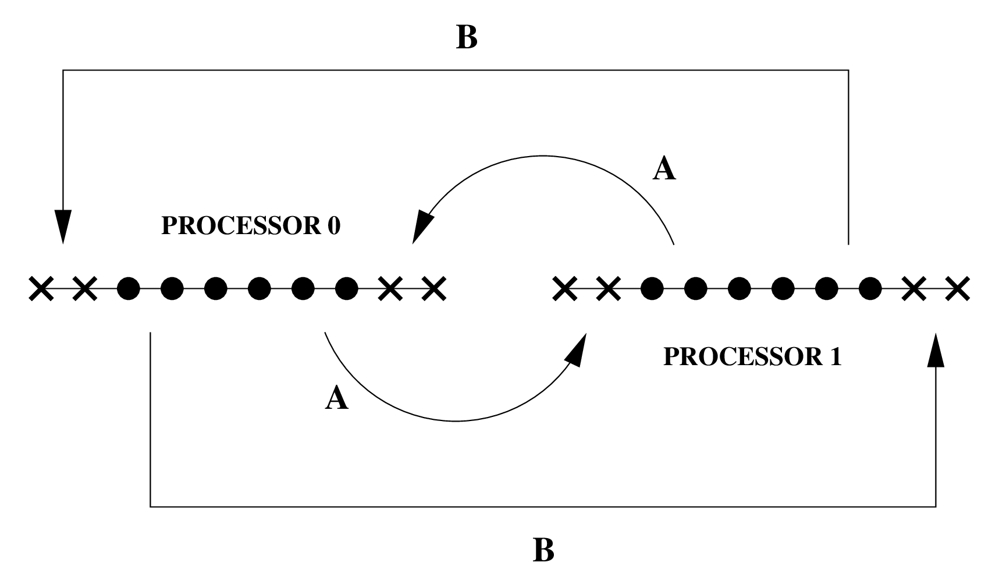
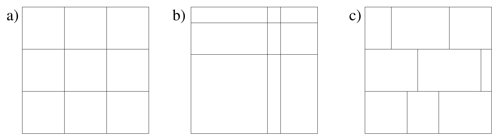

The default unigrid driver for Cactus for both multiprocessor and single process runs, handling grid variables and communications.
PUGH can create, handle and communicate grid scalars, arrays and functions in 1, 2 or 3-dimensions.
PUGH can be compiled with or without MPI. Compiling without MPI results in an executable which can only be used on a single processor, compiling with MPI leads to an executable which can be used with either single or multiple processors. (Section 6 describes how you can tell if your executable has been compiled with or without MPI).
For configuring with MPI, see the Cactus User’s Guide.
The number of grid points used for a simulation can be set in PUGH either globally (that is, the total number of points across all processors), or locally (that is, the number of points on each processor).
To set the global size of a N-D grid to be 40 grid points in each direction use
PUGH::global_nsize = 40
To set the global size of a 2D grid to be \(40\times 20\) use
PUGH::global_nx = 40 PUGH::global_ny = 20
To set the local size of a 2D grid to be \(40\times 20\) on each processor, use
PUGH::local_nx = 40 PUGH::local_ny = 20
PUGH can implement periodic boundary conditions during the synchronization of grid functions. Although this may at first seem a little confusing, and unlike the usual use of boundary conditions which are directly called from evolution routines, it is the most efficient and natural place for periodic boundary conditions.
PUGH applies periodic conditions by simply communicating the appropriate ghostzones between “end” processors. For example, for a 1D domain with two ghostzones, split across two processors, Figure 1 shows the implementation of periodic boundary conditions.

Periodic boundary conditions are applied to all grid functions, by default they are applied in all directions, although this behaviour can be customised to switch them off in given directions.
By default, no periodic boundary conditions are applied. To apply periodic boundary conditions in all directions, set
PUGH::periodic = "yes"
To apply periodic boundary conditions in just the x- and y- directions in a 3 dimensional domain, use
PUGH::periodic = "yes" PUGH::periodic_z = "no"
By default PUGH will distribute the computational grid evenly across all processors (as in Figure 2a). This may not be efficient if there is a different computational load on different processors, or for example for a simulation distributed across processors with different per-processor performance.

The computational grid can be manually partitioned in each direction in a regularly way as in Figure 2b.
The computational grid can be manually distributed using PUGH’s string parameters
partition_[1d_x|2d_x|2d_y|3d_x|3d_y|3d_z]. To manually specify the load distribution, set
PUGH::partition = "manual" and then, depending on the grid dimension, set the remaining parameters to
distribute the load in each direction. Note that for this you need to know apriori the processor
decomposition.
The decomposition is easiest to explain with a simple example: to distribute a 30-cubed grid across 4 processors (decomposed as \(2 \times 1 \times 2\), with processors 0 and 2 performing twice as fast as processors 1 and 3) as:
| proc 2: \(20 \times 30 \times 15\) | proc 3: \(10 \times 30 \times 15\) |
| proc 0: \(20 \times 30 \times 15\) | proc 1: \(10 \times 30 \times 15\) |
you would use the following topology and partition parameter settings:
# the overall grid size PUGH::global_nsize = 30 # processor topology PUGH::processor_topology = manual PUGH::processor_topology_3d_x = 2 PUGH::processor_topology_3d_y = 1 PUGH::processor_topology_3d_z = 2 # redundant # grid partitioning PUGH::partition = "manual" PUGH::partition_3d_x = "20 10"
Each partition parameter lists the number of grid points for every processor in that direction, with the numbers
delimited by any non-digit characters. Note that an empty string for a direction (which is the default value for
the partition parameters) will apply the automatic distribution. That’s why it is not necessary
to set PUGH::partition_3d_y = "30" or PUGH::partition_3d_z = "15 15" in the parameter
file.
Because the previous automatic distribution gave problems in some cases (e.g. very long box in one, but short in
other directions), there is now an improved algorithm that tries to do a better job in decomposing the grid
evenly to the processors. However, it can fail in certain situations, in which it is gracefully falling back to
the previous ("automatic_old") giving a warning. Note that, if one or more of the parameters
PUGH::processor_topology_3d_* or PUGH::partition_3d_* are set, this mode automatically falls back to
"automatic_old" without warning.
PUGH reports information about the processor decomposition to standard output at the start of a job. This section describes how to interpret that output.
Single Processor (no MPI)
Type of evolution
If an executable has been compiled for only single processor use (without MPI), the first thing which PUGH reports is this fact:
INFO (PUGH): Single processor evolution
Multiple Processor (with MPI)
Type of evolution
If an executable has been compiled using MPI, the first thing which PUGH reports is this fact, together with the number of processors being used:
INFO (PUGH): MPI Evolution on 3 processors
Maximum load skew
The maximum load skew describes the variance in the number of gridpoints on each processor, and is defined by
\[\mbox {Max Skew} = 100 \;\;\frac {\mbox {Max Points}- \mbox {Min Points}}{\mbox {Average Points}} \]
For most purposes, the maximum skew should ideally be close to zero, however if your simulation has a different load at different grid points, or if you are running across processors with different properties, the optimal skew could be quite different.
By default, PUGH tries to minize the skew in gridpoints, however this may be overriden by performing the load balancing manually.
There are several parameters in PUGH which are useful for debugging and optimisation:
Enables storage for all grid variables (that is, not only those set in a thorn’s schedule.ccl file). Try this parameter if you are getting segmentation faults. If enabling all storage removes the problem, it most likely means that you are accessing a grid variable (probably in a Fortran thorn) for which storage has not been set.
By default, when PUGH allocates storage for a grid variable it does not initialise its elements. If you access an uninitialised variable on some platforms you will get a segmentation fault (and in general you will see erratic behaviour). This parameter can be used to initialise all elements to zero, if this removes your segmentation fault you can then track down the cause of the problem by using the same parameter to initialize all elements to NaNs and then track them with the thorn CactusUtils/NaNChecker.
Note that it isn’t recommended to simply use this parameter to initialise all elements to zero, instead we recommend you to set all variables to their correct values before using them.
This parameter can be set to print out the number of grid variables which have storage allocated at each iteration, and the total size of the storage allocated by Cactus. Note that this total does not include storage allocated independently in thorns.
This parameter can be set to provide the time spent communicating variables between processors.
| cacheline_mult | Scope: private | INT |
| Description: Multiplier for cacheline number
| ||
| Range | Default: 4001 | |
| 0:* | Any positive number
| |
| enable_all_storage | Scope: private | BOOLEAN |
| Description: Enable storage for all GFs?
| ||
| Default: no | ||
| ghost_size | Scope: private | INT |
| Description: The width of the ghost zone in each direction
| ||
| Range | Default: -1 | |
| -1:* | Any positive number to override the ghost_size_[xyz] parameters
| |
| ghost_size_x | Scope: private | INT |
| Description: The width of the ghost zone in the x direction
| ||
| Range | Default: 1 | |
| 0:* | Must be a positive integer
| |
| ghost_size_y | Scope: private | INT |
| Description: The width of the ghost zone in the y direction
| ||
| Range | Default: 1 | |
| 0:* | Must be a positive integer
| |
| ghost_size_z | Scope: private | INT |
| Description: The width of the ghost zone in the z direction
| ||
| Range | Default: 1 | |
| 0:* | Must be a positive integer
| |
| global_nsize | Scope: private | INT |
| Description: The size of the grid in each spatial direction
| ||
| Range | Default: -1 | |
| -1:* | Grid of this size in each dir distributed across all processors
| |
| global_nx | Scope: private | INT |
| Description: The size of the grid in the x direction
| ||
| Range | Default: 10 | |
| 0:* | Grid of this size distributed across all processors
| |
| global_ny | Scope: private | INT |
| Description: The size of the grid in the y direction
| ||
| Range | Default: 10 | |
| 0:* | Grid of this size distributed across all processors
| |
| global_nz | Scope: private | INT |
| Description: The size of the grid in the z direction
| ||
| Range | Default: 10 | |
| 0:* | Grid of this size distributed across all processors
| |
| info | Scope: private | KEYWORD |
| Description: Provide additional information about what PUGH is doing
| ||
| Range | Default: none | |
| none | No extra information
| |
| load | Load on each processor
| |
| initialize_memory | Scope: private | KEYWORD |
| Description: How to initialize memory for grid variables at allocation time
| ||
| Range | Default: none | |
| none | Do not initialize storage for allocated grid variables (default)
| |
| zero | Zero out all elements of all allocated grid variables
| |
| NaN
| Set all elements of allocated floating point grid variables to
Not-a-Number values
| |
| local_nsize | Scope: private | INT |
| Description: The size of the grid in each spatial direction
| ||
| Range | Default: -1 | |
| -1:* | Grid of this size in each dir on each processor
| |
| local_nx | Scope: private | INT |
| Description: The size of the grid in the x direction
| ||
| Range | Default: -1 | |
| -1:* | Grid of this size on each processor
| |
| local_ny | Scope: private | INT |
| Description: The size of the grid in the y direction
| ||
| Range | Default: -1 | |
| -1:* | Grid of this size on each processor
| |
| local_nz | Scope: private | INT |
| Description: The size of the grid in the z direction
| ||
| Range | Default: -1 | |
| -1:* | Grid of this size on each processor
| |
| local_size_includes_ghosts | Scope: private | BOOLEAN |
| Description: Does the local grid size include the ghost zones?
| ||
| Default: yes | ||
| overloadabort | Scope: private | BOOLEAN |
| Description: Overload Abort driver function
| ||
| Default: yes | ||
| overloadarraygroupsizeb | Scope: private | BOOLEAN |
| Description: Overload ArrayGroupSizeB driver function
| ||
| Default: yes | ||
| overloadbarrier | Scope: private | BOOLEAN |
| Description: Overload Barrier driver function
| ||
| Default: yes | ||
| overloaddisablegroupcomm | Scope: private | BOOLEAN |
| Description: Overload DisableGroupComm driver function
| ||
| Default: yes | ||
| overloaddisablegroupstorage | Scope: private | BOOLEAN |
| Description: Overload DisableGroupStorage driver function
| ||
| Default: yes | ||
| overloadenablegroupcomm | Scope: private | BOOLEAN |
| Description: Overload EnableGroupComm driver function
| ||
| Default: yes | ||
| overloadenablegroupstorage | Scope: private | BOOLEAN |
| Description: Overload EnableGroupStorage driver function
| ||
| Default: yes | ||
| overloadevolve | Scope: private | BOOLEAN |
| Description: Overload Evolve driver function
| ||
| Default: yes | ||
| overloadexit | Scope: private | BOOLEAN |
| Description: Overload Exit driver function
| ||
| Default: yes | ||
| overloadgroupdynamicdata | Scope: private | BOOLEAN |
| Description: Overload GroupDynamicData driver function
| ||
| Default: yes | ||
| overloadmyproc | Scope: private | BOOLEAN |
| Description: Overload MyProc driver function
| ||
| Default: yes | ||
| overloadnprocs | Scope: private | BOOLEAN |
| Description: Overload nProcs driver function
| ||
| Default: yes | ||
| overloadparallelinit | Scope: private | BOOLEAN |
| Description: Overload ParallelInit driver function
| ||
| Default: yes | ||
| overloadquerygroupstorageb | Scope: private | BOOLEAN |
| Description: Overload QueryGroupStorageB driver function
| ||
| Default: yes | ||
| overloadsyncgroup | Scope: private | BOOLEAN |
| Description: Overload SyncGroup driver function
| ||
| Default: no | ||
| overloadsyncgroupsbydiri | Scope: private | BOOLEAN |
| Description: Overload SyncGroupsByDirI driver function
| ||
| Default: yes | ||
| partition | Scope: private | KEYWORD |
| Description: Is the partition manual
| ||
| Range | Default: automatic | |
| automatic | even
| |
| manual | specified by partition_XYZ ..
| |
| partition_1d_x | Scope: private | STRING |
| Description: Tells how to partition on direction X
| ||
| Range | Default: (none) | |
| .* | A regex which matches anything
| |
| partition_2d_x | Scope: private | STRING |
| Description: Tells how to partition on direction X
| ||
| Range | Default: (none) | |
| .* | A regex which matches anything
| |
| partition_2d_y | Scope: private | STRING |
| Description: Tells how to partition on direction y
| ||
| Range | Default: (none) | |
| .* | A regex which matches anything
| |
| partition_3d_x | Scope: private | STRING |
| Description: Tells how to partition on direction X
| ||
| Range | Default: (none) | |
| .* | A regex which matches anything
| |
| partition_3d_y | Scope: private | STRING |
| Description: Tells how to partition on direction y
| ||
| Range | Default: (none) | |
| .* | A regex which matches anything
| |
| partition_3d_z | Scope: private | STRING |
| Description: Tells how to partition on direction z
| ||
| Range | Default: (none) | |
| .* | A regex which matches anything
| |
| physical2logical | Scope: private | KEYWORD |
| Description: Physical process to logical process mapping method to use
| ||
| Range | Default: direct | |
| direct | Maps MPI IDs directly to IJKs
| |
| example | Maps MPI IDs directly to IJKs using a lookup table
| |
| processor_topology | Scope: private | KEYWORD |
| Description: How to determine the processor topology
| ||
| Range | Default: automatic | |
| manual | Specified by proc_top_nx etc
| |
| automatic | Automatically generated
| |
| automatic_old | Automatically generated (old method)
| |
| processor_topology_1d_x | Scope: private | INT |
| Description: Number of processors in X direction
| ||
| Range | Default: (none) | |
| 0:* | See proc_topology
| |
| processor_topology_2d_x | Scope: private | INT |
| Description: Number of processors in X direction
| ||
| Range | Default: (none) | |
| 0:* | See proc_topology
| |
| processor_topology_2d_y | Scope: private | INT |
| Description: Number of processors in Y direction
| ||
| Range | Default: (none) | |
| 0:* | See proc_topology
| |
| processor_topology_3d_x | Scope: private | INT |
| Description: Number of processors in X direction
| ||
| Range | Default: (none) | |
| 0:* | See proc_topology
| |
| processor_topology_3d_y | Scope: private | INT |
| Description: Number of processors in Y direction
| ||
| Range | Default: (none) | |
| 0:* | See proc_topology
| |
| processor_topology_3d_z | Scope: private | INT |
| Description: Number of processors in Z direction
| ||
| Range | Default: (none) | |
| 0:* | See proc_topology
| |
| storage_report_every | Scope: private | INT |
| Description: How often to provide a report on storage information
| ||
| Range | Default: (none) | |
| 0:0 | Never report
| |
| 1:* | Report at intervals
| |
| storage_verbose | Scope: private | KEYWORD |
| Description: Report on memory assignment
| ||
| Range | Default: no | |
| yes | Standard storage information
| |
| report
| ”Provide a report of storage every storage_report_every iterations and
at termination”
| |
| no | Provide no information
| |
| timer_output | Scope: private | BOOLEAN |
| Description: Print time spent in communication
| ||
| Default: no | ||
| periodic | Scope: restricted | BOOLEAN |
| Description: Periodic boundary conditions
| ||
| Default: no | ||
| periodic_x | Scope: restricted | BOOLEAN |
| Description: Periodic boundary conditions in x-direction
| ||
| Default: yes | ||
| periodic_y | Scope: restricted | BOOLEAN |
| Description: Periodic boundary conditions in y-direction
| ||
| Default: yes | ||
| periodic_z | Scope: restricted | BOOLEAN |
| Description: Periodic boundary conditions in z-direction
| ||
| Default: yes | ||
| cctk_final_time | Scope: shared from CACTUS | REAL |
| cctk_initial_time | Scope: shared from CACTUS | REAL |
| cctk_itlast | Scope: shared from CACTUS | INT |
| max_runtime | Scope: shared from CACTUS | REAL |
| terminate | Scope: shared from CACTUS | KEYWORD |
| terminate_next | Scope: shared from CACTUS | BOOLEAN |
Implements:
driver
Adds header:
Register.h to pugh_Register.h
Uses header:
pugh_Register.h
vectors.h
This section lists all the variables which are assigned storage by thorn CactusPUGH/PUGH. Storage can either last for the duration of the run (Always means that if this thorn is activated storage will be assigned, Conditional means that if this thorn is activated storage will be assigned for the duration of the run if some condition is met), or can be turned on for the duration of a schedule function.
NONE
CCTK_STARTUP
pugh_startup
startup routine
| Language: | c | |
| Type: | function | |
CCTK_STARTUP
pugh_registerpughp2lroutines
register physical to logical process mapping routines
| Language: | c | |
| Type: | function | |
CCTK_STARTUP
pugh_registerpughtopologyroutines
register topology generation routines routines
| Language: | c | |
| Type: | function | |
CCTK_BASEGRID
pugh_report
report on pugh set up
| Language: | c | |
| Type: | function | |
CCTK_TERMINATE (conditional)
pugh_printtiminginfo
print time spent in communication
| Language: | c | |
| Type: | function | |
CCTK_TERMINATE (conditional)
pugh_printfinalstoragereport
print storage information
| Language: | c | |
| Type: | function | |
CCTK_POSTSTEP (conditional)
pugh_printstoragereport
print storage information
| Language: | c | |
| Type: | function | |
CCTK_TERMINATE
pugh_terminate
termination routine
| Language: | c | |
| Type: | function | |
| Alias Name: | Function Name: |
| PUGH_Startup | Driver_Startup |
| PUGH_Terminate | Driver_Terminate |